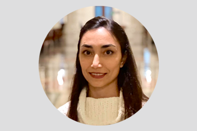

As a scholar, I have the great honor to train students in developing the skills and knowledge they need to address some of the most pressing challenges facing our world. My students learn to leverage theory, models and algorithms to push the boundaries of current knowledge and make contributions that are substantive to the field and meaningful to society. Many go on to earn advanced degrees and have successful, influential careers, in academia as well as industry. If you would like to be part of this transformative research, email me a short note about what you hope to work on and an example of your work.

I am pursuing my PhD in Data Science at WPI and hold a Master's in Industrial Engineering from Sharif University of Technology. My master thesis developed novel mathematical programming methods to optimize the delivery operations of humanitarian drones in the aftermath of a disaster to serve affected areas. My research interests are in using advanced analytical techniques (operations research and data science) to handle operational challenges in humanitarian operations and health care systems. I am currently researching challenges that exist in managing migration crises through the fair and humane allocation of necessary resources. I have a genuine interest in using technologies to overcome issues related to disadvantaged communities through new management and planning perspectives.
Read MoreMarcela is a PhD Student in Data Science at WPI. She holds a Master's in Industrial Engineering from the Federal University of Pernambuco, in Brazil. Marcela has worked in the supply chain industry, particularly on route optimization. During her Master's, she used Machine Learning models to address stochasticity in a retailer stock management optimization problem. She is currently working on refugee professional integration and optimal matching to job opportunities. Her current research interests are in applications of Operations Research combined with Machine Learning to benefit society.
Read MoreI am pursuing my PhD in Operation Management at WPI. I hold a Master's degree in Industrial Engineering from Sharif University of Technology, Iran. My research interests include using mathematical optimization and operations research methods to address humanitarian challenges. I am currently focusing on bed allocation and capacity planning under demand uncertainty in the foster care system.
Read MoreÖzge is a PhD student in the Data Science program at WPI. She holds an Industrial Engineering Bachelor of Science degree from Bilkent University in Turkey, and an MS in Data Science from WPI. Her research interests are in mathematical optimization and decision support systems. She is currently working on the use of optimization to improve course scheduling at WPI. In the future, she hopes to continue being a part of the operations research community and make contributions with her research.
Read MoreDr. Weixiao Huang completed her PhD in Data Science at WPI in December 2024. Her research interests are in the development and application of mathematical optimization to solve practical problems that benefit society. She is currently focusing on resolving resource scarcity and improving collaboration of nonprofit ecosystems. She is also working on matching problems to address efficiency, interpretability, and fairness.
Read More